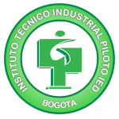

Formación académica
Estudios realizados por Jeison
Tecnólogo en análisis y desarrollo de sistemas de información
Servicio Nacional De Aprendizaje (SENA)
Titulado 26 de noviembre del 2019 - Bogotá, Colombia
Técnico en programación de software
Servicio Nacional De Aprendizaje (SENA)
Titulado 1 de diciembre del 2017 - Bogotá, Colombia

Bachiller técnico industrial - Especialidad sistemas y computación
Instituto Técnico Industrial Piloto
Titulado 7 de diciembre del 2017 - Bogotá, Colombia